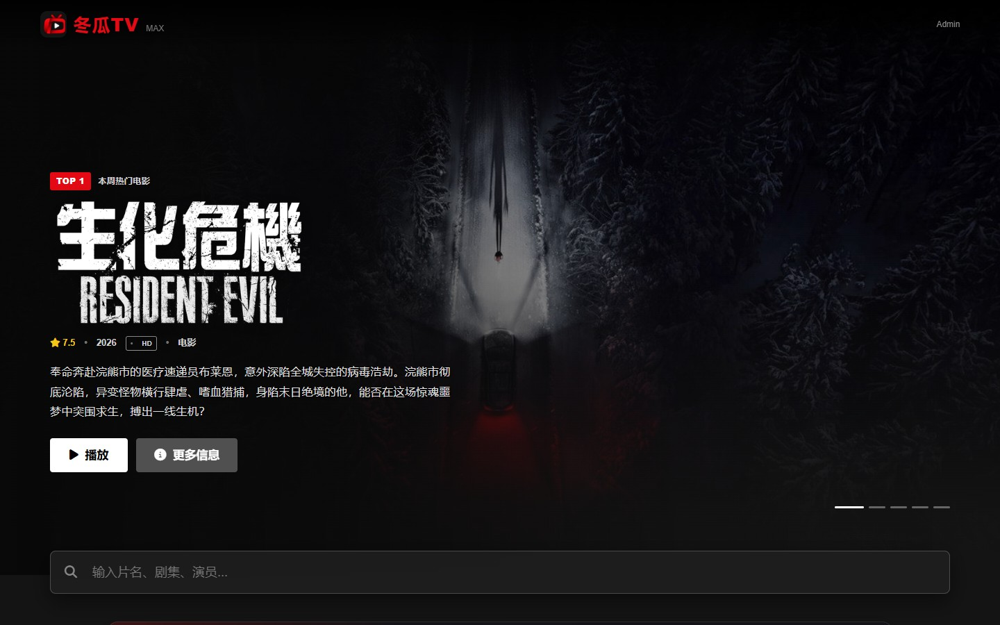
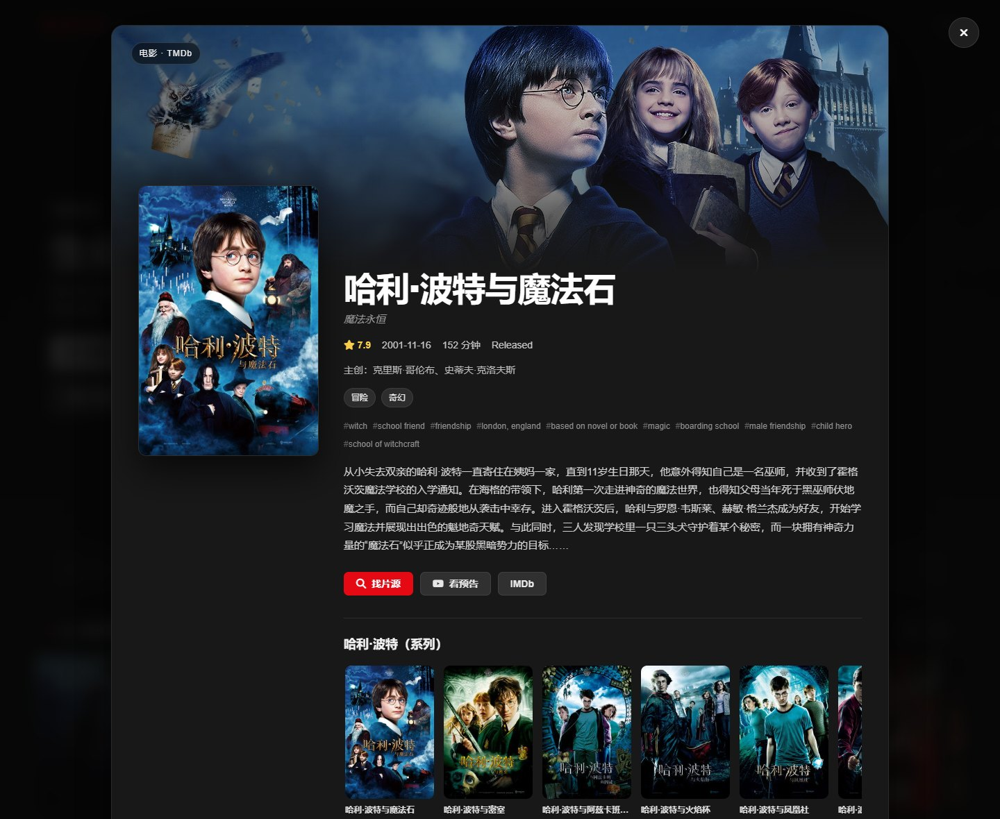
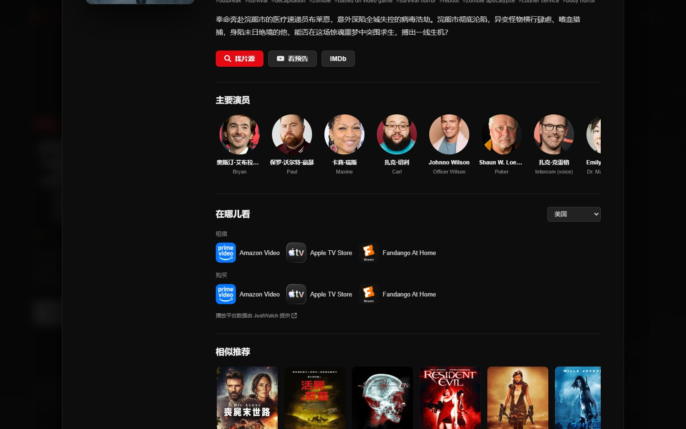
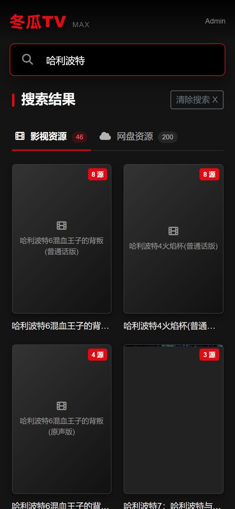
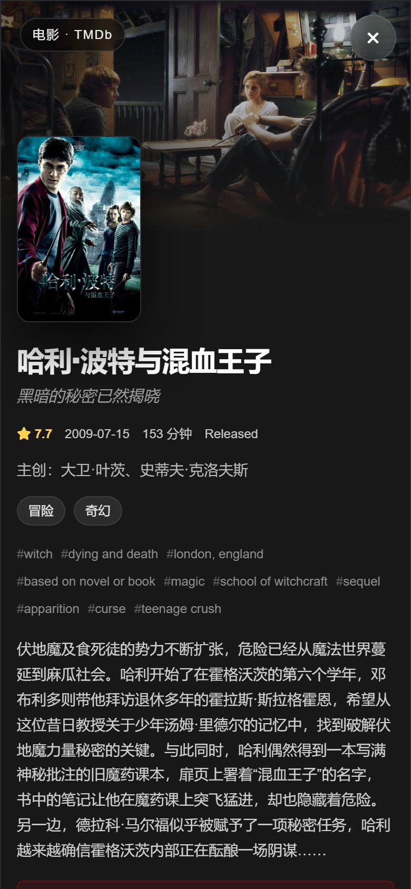
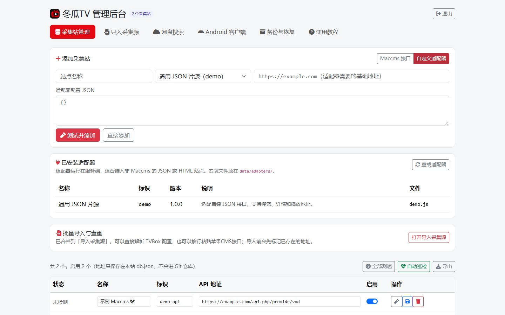
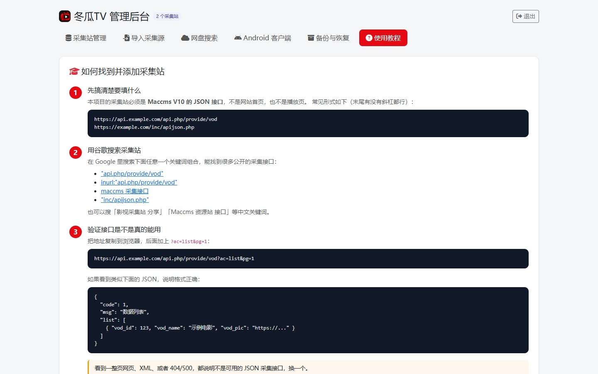

冬瓜TV 部署与使用教程
从零开始部署，到后台添加采集站、开启网盘搜索，一步一步来。
界面预览
截图来自实际运行的 Docker 测试实例。仓库与正式版不包含任何采集站地址，后台截图使用空白示例数据。







一、部署
方式 A：Docker Compose（推荐）
会同时启动「主站」和「PanSou 网盘搜索」两个容器，适合绝大多数人。
git clone https://github.com/Minerchu/dongguaTV.git
cd dongguaTV
# 可选：复制配置模板，改管理员密码、填 TMDB Key
cp .env.example .env
docker compose up -d --build启动后访问：
- 主站：
http://服务器IP:3000 - 后台：
http://服务器IP:3000/admin.html
采集站和后台设置保存在 ./data/db.json，docker compose down
或重建容器都不会丢。
页面地址可以直接分享
搜索、影视详情和播放页现在都有独立地址，浏览器前进/后退和刷新都能恢复：
/：首页/search?wd=庆余年：聚合搜索结果/title/movie/671、/title/tv/1399：电影或剧集详情/watch?name=片名&site=站点key&id=影片ID：播放页
Docker 的 HOST_PORT 只影响网址里是否带端口。不想显示 :3100 时，用 Nginx / Caddy 把域名代理到该端口即可，见下一节。
方式 B：单容器镜像（All-in-One）
主站和 PanSou 打进同一个镜像，只跑一个容器。适合不方便用 compose 的面板。
docker build -f Dockerfile.allinone -t dongguatv:allinone .
docker run -d --name dongguatv \
-p 3000:3000 \
-v dongguatv-data:/app/data \
-e ADMIN_PASSWORD=改成你自己的密码 \
-e TMDB_API_KEY=你的TMDB密钥 \
dongguatv:allinonePanSou 已内置，只在容器内部监听 8888，不需要也不建议把 8888 开到公网。
ghcr.io/fish2018/pansou。如果服务器拉不动，
请先用代理或镜像加速拉取，或者直接用方式 A 的 compose。
方式 C：不用 Docker（Node.js）
npm install
cp .env.example .env
# 编辑 .env，至少填写 TMDB_API_KEY 和 ADMIN_PASSWORD
npm start需要 Node.js 18 以上（推荐 20 / 22）。TMDb Key 由服务端读取，不需要改前端。
需要准备的东西
| 项目 | 是否必须 | 说明 |
|---|---|---|
| TMDb API Key | 必须 | 到 TMDb 官网申请；反代已内置，不需要自备域名 |
| 采集站接口 | 必须 | 在后台自行添加，格式见第四节 |
| PanSou | 可选 | 网盘搜索；compose / all-in-one 已经内置 |
二、修改端口
先记住一句话：左边是宿主机端口，右边是容器端口。
ports:
- "8080:3000"
# ↑ ↑
# 浏览器访问 8080
# 容器里的程序仍然监听 30001. 只改访问端口（最常见）
推荐在 .env 里改 HOST_PORT，容器内部端口和内置反代都不用动：
HOST_PORT=8080docker compose up -d也可以直接改 docker-compose.yml 里冒号左边的数字：
ports:
- "8080:3000"之后访问 http://服务器IP:8080 即可，程序内部不用改。
2. 同时修改容器内部端口
如果 3000 被别的程序占用，或者你想让程序本身也监听 8080：
ports:
- "8080:8080"
environment:
- PORT=8080用 docker run 时同理：
docker run -d --name dongguatv \
-e PORT=8080 \
-p 8080:8080 \
dongguatv:allinone3. PanSou 的端口（一般不用改）
Compose 和 All-in-One 都让 PanSou 只在容器内部通信， 不需要对公网开放端口，平时不用改。只有容器内部端口冲突， 或你确实想单独访问 PanSou 时才需要动它。
Compose 方式（改完要让主站指向新端口）：
pansou:
environment:
- PORT=18888
# 同时把主站的 PANSOU_URL 改成 http://pansou:18888All-in-One 方式（只改容器内部端口，不发布到宿主机）：
docker run -d --name dongguatv \
-p 3000:3000 \
-e PANSOU_PORT=18888 \
dongguatv:allinonePANSOU_URL 指向容器内的
http://127.0.0.1:${PANSOU_PORT}，你不用手动改。
4. 不用 Docker 时
编辑项目根目录的 .env：
PORT=8080或者临时启动：
PORT=8080 node server.js5. 用 Nginx 反向代理（可选）
想用域名 + 80/443 访问，可以让 Nginx 转发到 3000：
server {
listen 80;
server_name your-domain.com;
location / {
proxy_pass http://127.0.0.1:3000;
proxy_set_header Host $host;
proxy_set_header X-Forwarded-Proto $scheme;
proxy_set_header X-Real-IP $remote_addr;
}
}三、首次使用
- 打开
http://服务器IP:端口/admin.html - 输入管理员密码。默认是
admin - 登录后先做两件事：改密码、加采集站
修改管理员密码
在 docker-compose.yml 或 .env 里改：
ADMIN_PASSWORD=一个复杂密码docker compose up -dadmin 只能用于本地测试。部署到公网前必须改掉。
四、添加采集站
项目里不内置任何采集站，也不在 GitHub 上保存任何站点地址。 你需要自己找公开的 Maccms V10 JSON 接口，然后在后台添加。
1. 正确格式长什么样
不是网站首页，也不是播放页，而是接口地址，通常以这些形式结尾：
https://example.com/api.php/provide/vod
https://example.com/inc/apijson.php2. 怎么找
在 Google 里搜索下面任意一个关键词组合：
"api.php/provide/vod"inurl:"api.php/provide/vod"maccms 采集接口"inc/apijson.php"
也可以搜「影视采集站 分享」「Maccms 资源站 接口」等中文关键词。
3. 验证能不能用
把地址复制到浏览器，后面加上 ?ac=list&pg=1：
https://example.com/api.php/provide/vod?ac=list&pg=1看到这样的 JSON 就说明格式正确：
{
"code": 1,
"msg": "数据列表",
"list": [
{ "vod_id": 123, "vod_name": "示例电影", "vod_pic": "https://..." }
]
}如果看到的是一整页网页、XML、404 或 500，就换一个。
4. 添加到后台
- 打开「采集站管理」
- 填站点名称和接口地址
- 点「测试并添加」，显示「连接正常」就成功了
- 多个站点可以用「批量导入」，每行一个
我的资源站,https://example.com/api.php/provide/vod
另一个站,https://example.org/inc/apijson.phpdb.json（已在 .gitignore 中），
不要把自己的 db.json 上传到 GitHub，也不要截图公开接口地址。
五、网盘搜索（PanSou）
PanSou 是一个独立的 Go 服务，负责搜索 Telegram 频道和网盘插件。 本项目的 Compose 和 All-in-One 镜像已经把它打包进去，不需要你单独部署。
docker compose up -d 同时起两个容器；
方式 B 是同一个镜像里跑两个进程。两种方式第一次启动就可用。
Compose 方式
docker compose up -d 会同时启动 pansou 容器，
主站通过 PANSOU_URL=http://pansou:8888 自动连接，后台不用填地址。
All-in-One 方式
镜像内部会自动启动 PanSou，并设置好 PANSOU_URL，开箱即用。
使用已有的 PanSou
# 不启动自带的 pansou 服务，把地址改成你自己的
PANSOU_URL=http://你的地址:8888也可以在后台「网盘搜索」页填写地址、Token、开关，点保存即可。
访问不了 Telegram？
给 pansou 容器配置代理：
pansou:
environment:
- PROXY=socks5://host.docker.internal:7890
- HTTPS_PROXY=http://host.docker.internal:7890
- HTTP_PROXY=http://host.docker.internal:7890检索结果太少？
PanSou 默认频道/插件有限，可以在 compose 里覆盖它自己的环境变量：
CHANNELS、ENABLED_PLUGINS。具体取值见
PanSou 文档。
六、Android 原生客户端
客户端使用 Kotlin + Jetpack Compose 编写，直接调用本站的
/api/search、/api/detail、/api/cloud/search 和 TMDb 同源接口，
播放器使用 Media3 / ExoPlayer。它不是网页套壳，也不需要 WebView。
docker compose 部署时，Android SDK、Gradle、apktool、zipalign 和 apksigner
都已经包含在镜像里。站长不需要安装 Android Studio，也不需要在电脑上编译 APK。
生成客户端
- 先在「采集站管理」添加至少一个可用的 Maccms JSON 接口。
- 打开后台的「Android 客户端」页。
- 设置应用名称，上传正方形 PNG 图标；浏览器会自动裁剪成 512×512。
- 填写手机能访问的服务器地址，例如
https://tv.example.com。 - 点击「保存并生成 APK」。服务器会自动排队编译，通常需要 1–3 分钟。
- 状态变成「已生成」后，在后台或首页下载 APK。
服务器地址怎么填
- 必须是手机实际能访问的地址，不要填
127.0.0.1、容器名或容器内部端口。 - 通过 Nginx / Caddy / Cloudflare 反代时，填反代后的域名，例如
https://tv.example.com。 - 局域网测试可以填
http://192.168.1.10:3000，手机和服务器要在同一网络。 - 客户端内置地址不可用时，也可以在客户端「设置」页手动修改服务器地址。
更新和签名
data/android-client/
├── donggua-tv.apk # 生成好的安装包
├── signing.jks # 本站独立签名
└── signing.pass # 签名密码
修改名称、图标、版本号或服务器地址后，保存会自动重新生成。
更新服务时必须保留 data/android-client，否则新 APK 会使用不同签名，手机无法覆盖安装。
如需排查失败原因，运行 docker compose logs -f dongguatv 查看构建日志。
All-in-One 镜像不包含 APK 编译组件；需要 Android 客户端时请使用标准 Dockerfile / Compose。
七、TMDb 功能与反代（默认零配置）
首页和详情页已经用到的功能
- 首页推荐：本周趋势、华语剧集、日韩剧集、港台电影、正在热映、高分电影、今日播出。
- 影视详情：评分、上映日期、片长、分级、类型、关键词、主创、演员和简介。
- 系列作品：电影属于系列时，展示同系列其他影片，可直接继续查看。
- 预告片：优先使用 YouTube 官方预告；新片没有预告时不会显示空按钮。
- 在哪儿看：按浏览器地区显示 Netflix、Disney+ 等平台，也可手动切换国家/地区。
- 相似推荐与找片源：点击推荐继续浏览；点“找片源”会带片名回到 Maccms 聚合搜索，同时搜索 PanSou 网盘资源。
前端不会再请求任何人的私人域名。服务端内置了 /tmdb 同源代理：
- 前端
/tmdb/3/...→https://api.themoviedb.org/3/... - 海报
/tmdb/t/p/...→https://image.tmdb.org/t/p/... TMDB_API_KEY只保存在服务端，不会出现在网页源码里
.env 里填 TMDB_API_KEY。
请求链路就在同一个端口，不需要额外的 IP、端口或反代容器：
浏览器 → http://服务器IP:3000/tmdb/... → 容器内 server.js → TMDb默认不要填 HTTPS_PROXY、TMDB_API_BASE、TMDB_IMAGE_BASE。
主域名超时或返回 5xx 时会自动切换备用域名，用户无需处理。修改 Docker 对外端口（例如
8080:3000）也不会影响反代，因为前端始终请求当前访问地址下的 /tmdb/...。
只有服务器访问不了 TMDb 时
在 .env 里填写代理：
HTTPS_PROXY=http://host.docker.internal:7890
HTTP_PROXY=http://host.docker.internal:7890host.docker.internal 指向宿主机，Compose 已经配置好映射。
All-in-One 则直接把同样的变量写成 -e HTTPS_PROXY=...。
只要宿主机能访问 TMDb，容器就能直接使用，不需要再搭建任何外部反代。
八、API 一览
这些是本项目自己的接口，供前端或二次开发使用：
GET /api/config # 前台配置
GET /api/search?wd=关键词 # 聚合搜索（影视）
GET /api/sites # 站点列表（含启用状态）
GET /api/cloud/search?wd=关键词 # 网盘搜索
GET /api/detail?site_key=站点key&id=影片ID
GET /api/hot # 最近 24 小时更新
GET /api/check?key=站点key # 站点测速
GET /api/app/download # 下载已生成的 Android APK
GET /api/app/icon # 客户端图标
# TMDb 同源代理（服务端注入 Key）
GET /tmdb/3/*
GET /tmdb/t/p/*管理接口需要先登录（HttpOnly Cookie 或 X-Admin-Token）：
POST /api/admin/login
GET /api/admin/sites
POST /api/admin/sites
PUT /api/admin/sites/:key
DELETE /api/admin/sites/:key
POST /api/admin/sites/test
POST /api/admin/sites/import
PUT /api/admin/settings
POST /api/admin/pansou/test
GET /api/admin/client
PUT /api/admin/client
POST /api/admin/client/build
POST /api/admin/client/icon
DELETE /api/admin/client/icon九、常见问题
启动后搜索没有任何结果？
先确认后台已经添加了采集站并且处于「启用」状态。新安装默认是空的。
添加时提示「不是 Maccms JSON 接口」？
说明地址不是 JSON 采集接口。检查是不是少了 /api.php/provide/vod，或者返回的是网页/XML。
搜索很慢？
关掉响应慢的站点，或者减少启用数量。默认单站 6 秒超时，可用 SEARCH_TIMEOUT 调整。
忘记后台密码了？
改 ADMIN_PASSWORD 环境变量后重启容器即可。
网盘搜索显示暂不可用？
检查 pansou 容器是否在运行、服务器能否访问 Telegram、代理是否正确。
TMDb 首页没有内容？
确认 .env 里填了 TMDB_API_KEY。如果服务器访问不了 TMDb，
配置 HTTPS_PROXY，或把 TMDB_API_BASE / TMDB_IMAGE_BASE
换成你自己的反代地址。
更新版本后站点数据会丢吗？
Compose 默认把 ./data 挂到 /app/data，
数据在宿主机的 data/db.json，重建容器不会丢。
用 docker run 时请加 -v dongguatv-data:/app/data；
没有挂载的话，删除容器会一起删掉配置。
必须单独安装 PanSou 吗？
不需要。Compose 和 All-in-One 都自带 PanSou。只有你想用自己的 PanSou
实例时，才需要把 PANSOU_URL 改成那个地址。
怎么备份？
备份 data/db.json 即可，里面包含采集站和网盘配置。
免责声明
本项目仅作为 Node.js 的学习项目开源，不存储、不发布、不参与任何影视内容的制作与传播。 采集站、网盘资源均由第三方提供，本项目只做技术聚合。
请只接入你有权使用的接口，并遵守当地法律法规。请支持正版影视内容。